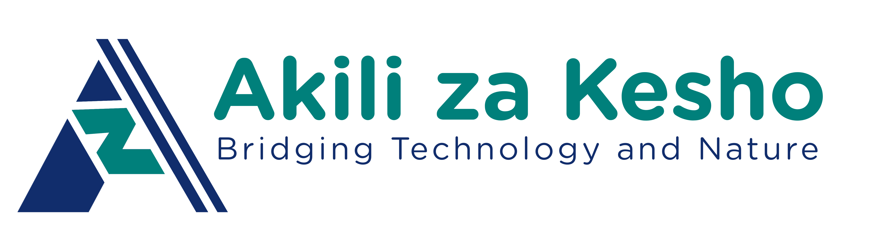

AZK Ventures — Internship Demo
This page is a live teaching example built by our interns to practice HTML, CSS, GitHub collaboration, and real-world deployment — the same skills used by tech teams worldwide.
Akili za Kesho ("Minds of Tomorrow" in Swahili) is a Uganda-based tech ventures and training organisation under the Tomorrow Minds initiative. AZK's mission is bridging technology and nature — building practical, African-led solutions in software, data, cybersecurity, and hardware/IoT, while contributing to UN Sustainable Development Goals 4 (Quality Education), 8 (Decent Work & Economic Growth), and 9 (Industry, Innovation & Infrastructure).
AZK runs a hands-on, Agile-style tech internship rather than a traditional one. Interns are grouped into small cross-functional teams called Pods — each with a Project Manager, Builders/Analysts, and a Director acting as Product Owner. Pods spend several weeks designing and building a real venture from scratch, using the same tools and workflows used by professional software teams worldwide: GitHub for code, Trello/Jira for task tracking, and weekly Agile Sprints with stand-ups and a Friday "Venture Defense" review.
Sprints, daily stand-ups, and Kanban boards keep every Pod organised.
Fork, commit, push, and Pull Request — the real way code moves into production.
This exact page was deployed using GitHub Pages — free hosting for static sites.
These are the exact commands every intern runs in their terminal to collaborate on this project. Run them in order, from inside your project folder.
Clone your forked copy of the repo to your computer.
git clone https://github.com/your-username/AZK-Intern-Roster-2026.git
Move into the project folder.
cd AZK-Intern-Roster-2026
Create a new branch for your changes (keeps your edits separate from the main code).
git checkout -b my-name-update
Check which files you've changed.
git status
Stage your changes so Git knows to save them in the next commit.
git add .
Commit your changes with a clear, short message.
git commit -m "Add my bio to the team page"
Push your branch up to your GitHub fork.
git push origin my-name-update
Go to GitHub and open a Pull Request so a trainer can review and merge your work.
Open a Pull Request on github.com
Trainer — Product, Design & Build
Trainer — Collaboration & Deployment
Each intern forks the shared AZK repo to get their own copy.
Edit the code locally, save it, then commit with a clear message.
Push your commit to GitHub, then open a PR so trainers can review it.
Once merged, GitHub Pages turns this folder into a live website link — free and instant.